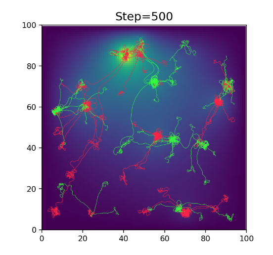

- Axon Growth Simulation
Contributors: Michael I. Ivanitsky, Connor Puritz
Generating neural connectomes by simulating diffusion of numerous neurite growth factors across a network, with neuron activity varying depending on the incoming connections.
- mltests
Contributors: John U. Balis, Michael I. Ivanitsky, William Derksen
neuro-evolution of spiking neural networks, using some OpenAI environments as well as custom environments
- MNIST autoencoder
Contributors: John U. Balis
PyTorch MNIST digits classifier from sentdex's PyTorch tutorial repurposed to autoencode MNIST and visualize traversal of latent space.
- Neuron models library
Contributors: Michael I. Ivanitsky
Implements several different biological neuron models and accompanying tools in python under a common framework